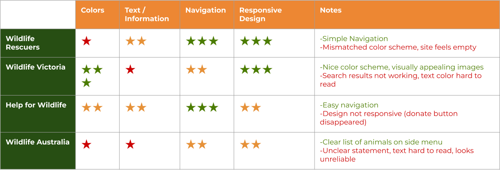
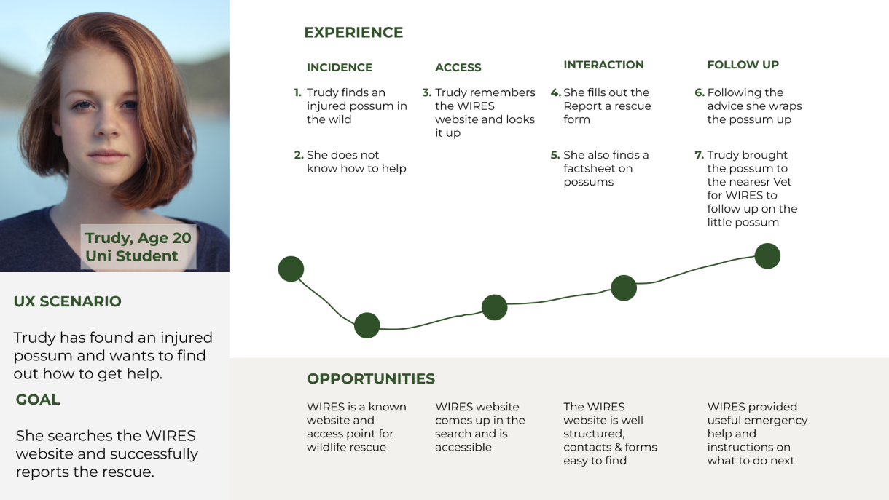

Autism Camp Australia
Responsive Design Website
Project Summary
This case study investigated the usability of the WIRES website. The user perspective taken was of someone wishing to report a wildlife rescue or donate to WIRES. User testing was performed and assessed, with issues identified as navigation and readability. The home, about, emergency advice, report a rescue, contact us and donation pages were redesigned and a prototype created.

Project Overview
The WIRES website redesign was conducted as a group project for the Monash University UI/UX Bootcamp. Our brief was the redesign of any website for a charity we were passionate about, which led us as a group to WIRES a wildlife rescue charity that we felt was in need of our support for redesigning their website.
Our redesign included the home, about, emergency advice, report a rescue, contact us pages, donation modality, and Information Architecture.
Special acknowledgement to Michelle Fiebiger, Wei Le Marshall and Tam Tran as the other contributing members of my group.
My Contribution
- Role:
- My Responsibilities
- Project Type
- Project Duration
- Design Tools
- Deliverables
Design Process Overview
In order to develop a user informed solution to the problem, the Design Thinking methodology was utilised. Developed by Hasso Plattner Institute of Design, this approach addresses complex problems by understanding human needs, with the benefit of accounting for unknown variables.
The diagram below demonstrates the five stages of the Design Thinking Methodology.
By sequentially working through these stages, I was able to develop a user centric solution to the users problem.

The Problem
WIRES is a well established Wildlife Rescue Service, offering advice and assistance for over 130,000 animals annually. It provides full-time mobile Emergency Response across Greater Sydney, South-East Queensland & Tasmania.
However, the current website design is difficult to navigate and has no clear flow through information, with large amounts of text.
The Solution
To solve the problem the WIRES website needs the navigation bar redesigned to reduce the number of options. The user needs to be provided with a clear flow through the information, and be able to clearly distinguish the appropriate rescue option required for the situation. Additionally, the website needs the ascetics updated to a more modern design.
Empathise
Understanding another person’s feelings better to gain an understanding of what their needs are. This aids in discovering where the problems lie and establishing the core issues.
Understanding the User and Interface Analysis
Our first step to gain an understanding of the user of the WIRES website was to create a Proto Persona. This helped us to develop a picture of the demographics for who the perceived user of the WIRES website might be, and what problems they might be experiencing in using the website. This was followed by an assessment of the current website. The most likely user flows taken by the user in navigating their way to the report a rescue process, wildlife information, and the donation process were identified. A heuristics assessment was also conducted to identify potential areas for improvement and WCAG colour accessibility testing performed.
Heuristics assessment
The huristics assessment was conducted by taking screen shots of the potential user flow and adding lables in miro where we perceived problems. These areas included appearance, content and navigation. The results of the assessment and an sample image of the homepage are demonstrated below.
- Positives
- Negatives
WCAG Testing Fails
Contrast Ratio - 1.77:1
WCAG AA: Fail
WCAG AAA: Fail
Contrast Ratio - 2.54:1
WCAG AA: Fail
WCAG AAA: Fail
Current WIRES website
Testing the User Interface
Building on the initial ideas of the potential user and how they might perceive the website, a user research plan for testing the website was created. This plan was then implemented to conduct user testing, and feedback was gained on the interface from the perspective of a real user. Aspects for investigation included: navigation of the website, heuristics, and any pain points the user identified. . These parameters were also assessed against ACA’s competitors as a competitor analysis.
User Test Plan
- Objectives:
Methodology:
User testing was conducted to collect qualitative data from 5 participants. The testing was recorded via zoom and notes taken for further data analysis. Participants were provided with 3 tasks to complete and assessed for how quickly they can identify the intuitive signaling, move through the user flow, and ask for their opinion on the aesthetics and design of the website.
User Testing Analysis
The process of analysing the test data was performed on Miro and included establishing common themes in the data utilising an Affinity Diagram. Due to the large number of issues identified a frequency diagram was used to narrow down to the core issues. The results of this analysis produced the following key insights and user statements.
Key Insights
Competitor Analysis
A number of direct competitors were found to conduct a competitor analysis. Below is a breakdown of our findings as to how the WIRES website compared to other websites of Wildlife charities.
Define
Refining who the user is, narrowing down to define the problem and interpreting the results to create our problem statement.
Defining the User, their Journey and Priority Features
The user testing provided us with a clearer picture of our user and a better understanding of their needs. A User Persona was created to reflect our refined understanding of the user's goals, needs and pain points. To better understand their emotional experience using the website a user journey map was created. This was followed by a user flow chart, to define their paths from the homepage throught the report a rescue, wildlife information and donation process.
User Persona
Meet Trudy, our WIRES user and find out who she is, why she visited the WIRES website and challenges she faced reporting a wildlife rescue and finding information.

User Journey Map
Trudy’s experience of moving through the website was then mapped out into a user journey map to better identify at what points throughout the journey Trudy experiences her frustrations, touch points and what leads to success.
Feature Prioritisation
Having established our user and the problem areas of the website, a Feature Prioritisation matrix was created. This was done to establish what areas of the website were most important to WIRES and the user. These features became the focus of this redesign.
- Features prioritised:
How Might We?
How can we make it clearer & easier for users to find the relevant information on rescue animals?
Ideate
Utilising creativity and innovation in the brainstorming process, for the development of solutions to a defined problem.
Addressing User Flow, Navigation and Sketching up a solution
Our first tasks, having established our priorities, was to address the user fow and information architecture. With the new flow and information architecture we were then able to create our initial wireframe sketches commencing the process of solving the users problems.
User Flow Chart
After establishing the existing user journey through the website, and Feature Prioritisation, we set about ideating to create the new user flow. The first flow being, how to report an urgent rescue. Secondly, how the user donates to WIRES. Thirdly, how to report a non-urgent rescue, and finally finding information on wildlife affected by bushfires. This process generated our new User Flow and User Flow Chart, with the abbreviated User Flow Chart shown here.
Information Architecture
One of the key needs for the redesign of the WIRES website was the establishment of a new primary navigational structure. Card sorting was utilized as the method to establish new groupings, labels and structure. The final results were then further developed into a new sight map for the WIRES website. Below demonstrates the original WIRES navigation, and the new simplified site map for the prototype.
Origninal Primary Navigation
New Primary Navigation
Wireframes Ideation
To approach the problem of how we might redesign the website for our new user flows, we engaged in discussion. Together we formulated how the new wireframes would appear.
Prototype
Bringing ideas to life in an inexpensive scaled down version of the product, to develop a proposed solution to the problem.
Low Fidelity Wireframes and Prototype
Our initial wireframe ideation was further developed into the redesign of the home, navigation system and footer, Report a Rescue and Emergency Advice pages. An example of some of our early wireframes is shown below. Key changes from the original website included implementing the new information architecture, giving the design a more modern feel, highlighting the main services of WIRES on the homepage, and formatting the text on the information pages to be more readable.
Low Fidelity Wireframe
Test
Going back to the user to gain insights into if the ideation and prototyping process has solved the users problems. In addition, discovering how we can make further improvements to the prototype from the users perspective.
Did we solve the problem?
Testing our design allowed us to investigate the effectiveness of our ideation phase and solution. It allowed us to test “can the user now navigate to the Report a Rescue and Bushfire Emergency advice information pages”? And “can the user quickly identify the difference between and engage with the report an urgent rescue and report a rescue user flows.
User Testing
To test the effectiveness of our redesign user testing was performed. The key takeaway was the secondary navigation of the information architecture was still too complex. Also, feedback received was that the font in the primary navigation could be a little larger for elderly users, and more differentiation between small, medium and large elements to create a clear hierarchy.
Iterate
Ideating on the new insights received in the feedback from the user on the proposed solution, and perfecting the solution by encompassing these changes into the prototype.
Refining the Solution
Even though testing showed there were still some problems with our design, we were confident that we were on the right track with our initial wireframes. To improve the prototype some iterations would be required to refine the experience for the user.
Iterations
To solve the problems we identified in the user testing we made several iterations to the wireframes. For the information architecture the secondary navigation options were reduced. The information pages were redesigned to break up the content more by adding pictures differing in size and varying their placement.
Style Guide and High Fidelity Wireframes
With our wireframes finalised a style guide was created and applied to create the High fidelity wireframes and prototyping completed. Rebranding was not part of this redesign. However, a slight change was made to the primary green and orange to pass WCAG accessibility.
High Fidelity Wireframes - Homepage and Report A Rescue
High Fidelity Wireframes - Donations Modality
Responsive Redesign
To complete the redesign, a responsive design layout was created for the mobile view to indicate the layout for front end development.
Conclusion
The redesign of the homepage and information architecture to improve the user flow through to the report a rescue process, make a donation directly to WIRES, and wildlife rescue information was a success. The user could easily navigate to the Wildlife Rescue Information, select what information to read was important to them and identify how to take action. Also, easily identify how to report an urgent or non-urgent rescue and make a decision on the more appropriate action.
What I learned from the experience was that whilst a website has many pages to present to the user they don’t all need to be presented in the primary navigation. Establishing the core business areas, creating defined user flows from these areas and making these the primary navigation presents the user with clear starting points for finding information. Additionally, breaking up large blocks of copy with images of differing sizes and varying the position creates a hierarchy and boundaries for information. This greatly assists the ability of the user to scan the information and improves readability by not overwhelming the user with content.
Next Steps
Further redesign was identified as required during the Usability Testing stage of this Case study, but was beyond the capability to be implemented in the timeframe allocated.
- These areas to be addressed in the future include:
Thank you
Thank you for taking the time to review my work. More details can be found in the comprehensive case study slide deck linked below.